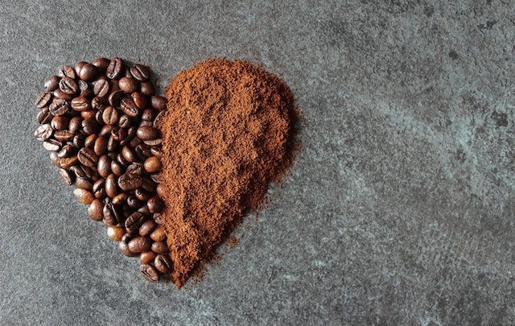

História
Eu sou apaixonada por Café, e isso se tornou não so minha paixão, mais tambem o meu trabalho.
Uma xícara de café pela manhã é a maneira favorita de muitas pessoas começarem o dia.
Assim como eu, quase todo mundo ama apreciar um bom café acompanhado de um delicioso lanchinho.
Para demonstrar o nosso amor por essa bebida quentinha que energiza os nossos dias nós preparamos o melhor do Café
em um ambiente acomchegante.
Mais do que uma Cafeteria!
Um ambiente aconchegante pra você trabalhar ou estudar enquanto saboreia seu delicioso cafezinho.
Grãos especias selecionados, pra ter o melhor sabor e qualidade, torras tradicional,media e extra forte.
